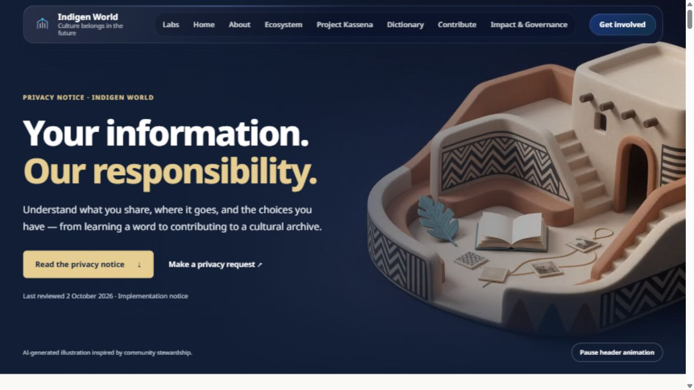
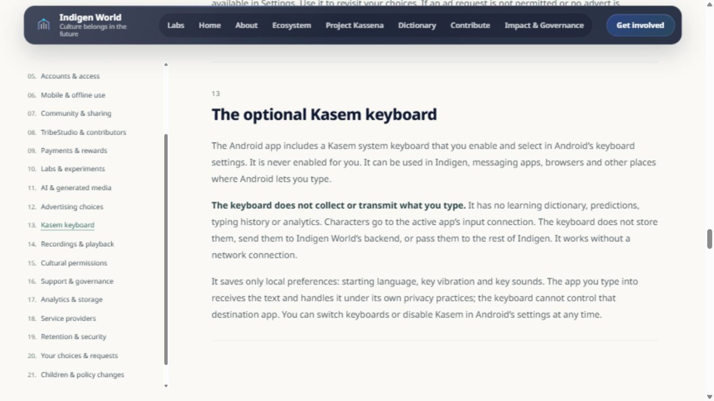
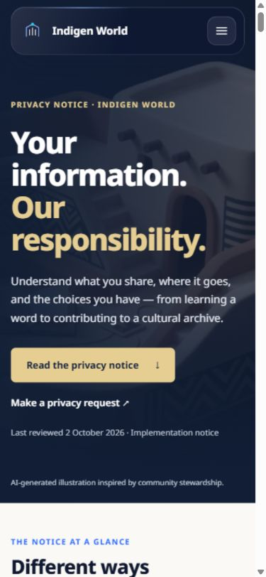

Prepared update — publication follows release verification. We have rebuilt Indigen World’s privacy notice to explain information handling across the website and dictionary, Indigen mobile app, TribeStudio, contributor workspaces and Labs. The screenshots below show the verified local build. This website update has not yet been deployed.
Whether you are saving a word, sending a recording, writing a story or contributing to Project Kassena, you should be able to find what happens to your information and what choices you have.

The expanded notice has 21 sections. It covers public browsing and saved dictionary words; website forms and Venacula; accounts and mobile offline work; community content and conversations; contributor assignments and payments; Labs drafts and practice; AI assistance and generated media; advertising choices; the Kasem keyboard; recordings and playback; cultural permissions; support, service providers, diagnostics, retention and privacy requests.
Each topic distinguishes the relevant information, its purpose and its limits. A local draft, a queued submission, a private saved story and a published dictionary entry have different audiences. Signing in does not automatically make everything public.
After release, open the privacy notice and use the section index. Three summary cards lead to offline information, cultural permissions and privacy requests. On a wider screen the index stays beside the article; on a phone it appears above the full notice.

The new header uses a quiet Gemini Omni animation: a gold arc moves around an imagined courtyard and archive. A pause control lets you stop it. Playback pauses when the header leaves view or the tab is hidden. A still image is used when reduced motion or the browser’s data-saving preference is enabled, or when playback cannot start. Gentle section reveals also respect reduced motion.

The page now explains private payment details and supporting documents, the optional Google-assisted statement comparison and human finance decision, which inputs can reach AI providers, and how review and support records are handled. It also explains the newsletter welcome acknowledgement separately from recurring newsletter delivery.
You can request access, correction, deletion or a review of consent and publication through the contact page. Account and server-side requests remain handled by the team. Removing a local copy does not remove server records, and removing a publication cannot recall copies someone else already downloaded.
This redesign is implemented and verified locally; deployment and live checks are pending. The notice remains a plain-language implementation summary pending final legal approval. Mentioning a feature does not mean it is enabled for every account, region or app build. This update does not enable advertising, AI tools, automatic statement checks or recurring newsletters.
Chinedum will publish this article and share the update after the website release is confirmed.